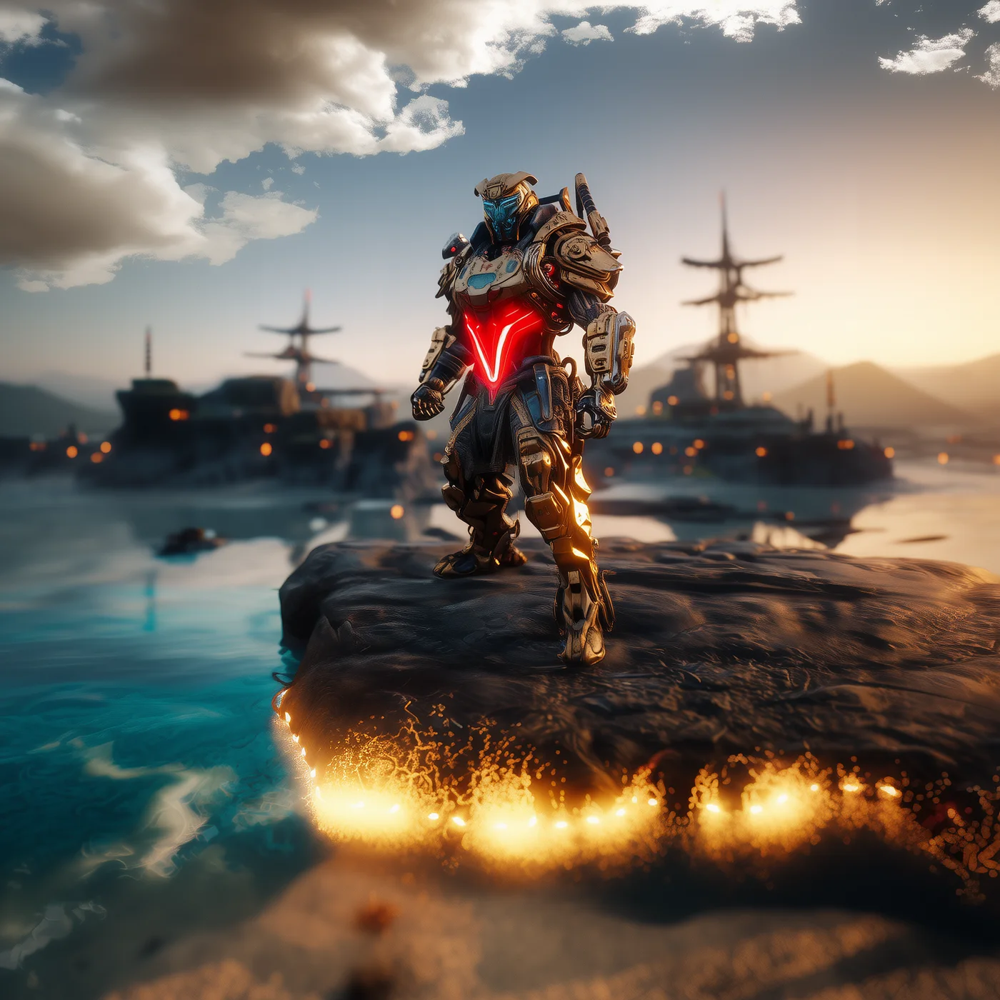

©
©

Wyphor
Eternal Custodian · Recruit
Wyphor runs patrols along the Threshold, the thin places where the portal could open. The Shift Spark flickers through the flanks with piercing force, and strikes twice as hard when only one enemy is left. The Eternal Custodian says every door has a keeper. Wyphor keeps the farthest ones.